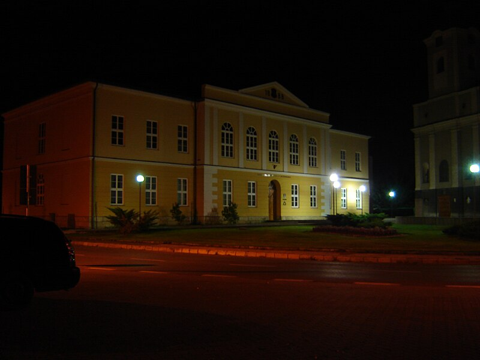

Ružomberok
Školstvo
Materské školy
- MŠ Bystrická Cesta
- MŠ Za dráhou
- MŠ Riadok
- MŠ Bernoláka
- MŠ Moyzesa
- MŠ Hrabovská cesta
- MŠ Biely Potok
- MŠ Černová
- MŠ Hrboltová
- MŠ Klačno
Základné školy
- ZŠ Biely Potok
- ZŠ Klačno
- ZŠ Sládkovičova
- ZŠ Dončova
- ZŠ Bystrická cesta
- ZŠ Černová
- ZŠ Zarevúca 18
- ZŠ sv. Vincenta
- Súkromná ZŠ
- Základná umelecká škola
Stredné školy
- Gymnázium v Ružomberku
- Gymnázium sv. Andreja
- Obchodná akadémia
- Škola úžitkového výtvarníctva
- Stredná odborná škola polytechnická
- Spojená škola obchodu a služieb
- Odborné učilište
- SZŠ M. T. Schererovej
- Súkromná škola podnikania
- Súkromné bilingválne gymnázium
Vysoké školy
- Katolícka univerzita – okrem rektorátu univerzity má v meste svoje sídlo Filozofická fakulta, Pedagogická faktulta a Fakulta zdravotníctva.
